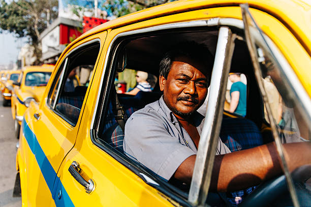
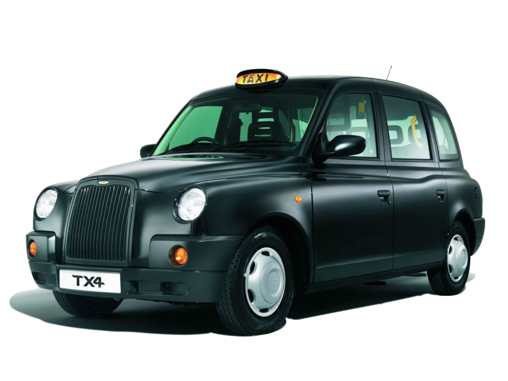

Home
About
Taxi
Services
Contact
BOOK A TAXI
Sagar Taxies
Safe travelling is just a
tap away
About Us
Sagar Taxies is one of the finest taxi service companies in the region. We are known forour superior customer service and professional approach at all times. We aim to offer our customers a superiorexperience with our taxi service. We are dedicated to providing door-to-door online taxi service. All thedrivers and car service providers associated with us are experts in the field and have immense knowledge ofthe taxi and car rental industry.
Taxies for all occasions
Whether you are looking out for a taxi to explore the city or for an outstation journey, Sagar Taxies offers its fleet of taxi services to meet your varied requirements. We strive to provide service that meets and exceeds the expectations of our customers.
Affordable taxi services

At Sagar Taxies, we exert ourselves to provide maximum benefit to our customers. Our taxi service is available at an unbeatable price. We offer the best taxi service deals with professional drivers and support you can always rely on. Our taxi is safe, modern as well as easy on your wallet. Our taxi service helps you to reach your destination with ease and comfort.
Assured Safe Journey
All the taxis available with us all regularly maintained and checked to ensure their efficacy is maintained and their performance is retained. Our fleets are equipped with all the modern features to provide maximum comfort to our customers. We assure you of a safe, comfortable, and convenient journey with our specialized taxi service.
Skilled Chauffeurs
We are associated with some of the best, experienced, and qualified chauffeurs in the town. They are trained and skilled to enhance your experience with us. All the chauffeurs associated with us are verified and licensed.
Customer Support
Sagar Taxies promises great customer support to its patrons. You can connect with our support staff at our 24*7 customer support helpline for any queries or requirements. We are readily available to address your queries and provide you the required support.
Enjoy a peaceful, luxurious, and convenient journey right from your doorstep at inexpensive and reasonable rates only with Sagar Taxies – Make way for the #1 Taxi Service Company.
Type of taxies
Taxi round trip
For local travel, round-trip taxi services are a convenient, efficient, and comfortable means of transportation.Round trip services is one of the more classic services offered by outstation cab services. It's a very convenient and straightforward solution for travellers.
Hatchback

A hatchback is a car body configuration with a rear door that swings upward to provide access to the main interior of the car as a cargo area rather than just to a separated trunk.Hatchback taxis are an excellent choice for solo travellers or small groups looking for an inexpensive and comfortable means of transportation.
Flexible Services
Flexible taxi services offer convenient and personalised travel options based on the specific needs of customers.
Luxury

A luxury car is a car that provides above-average to high-end levels of comfort, features, and equipment. Often more expensive materials and surface finishes are used, and buyers expect better build quality.Luxury taxis are high-end transportation services that provide clients with a high level of luxury and style.
Sedan
A sedan or saloon is a passenger car in a three-box configuration with separate compartments for an engine, passengers, and cargo. Sedan taxis are popularly preferred for both short and long distance trips, as they offer a comfortable and spacious interior that is ideal for passengers